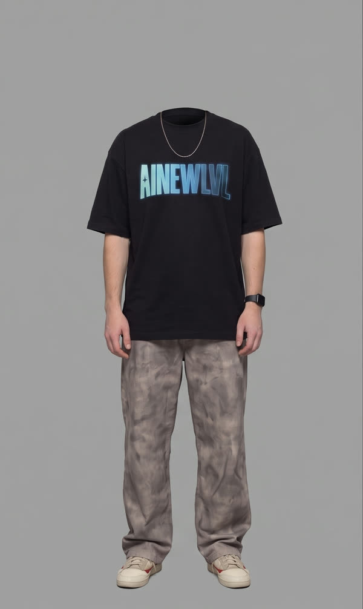
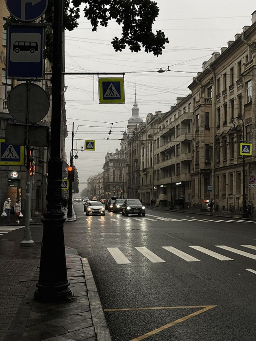
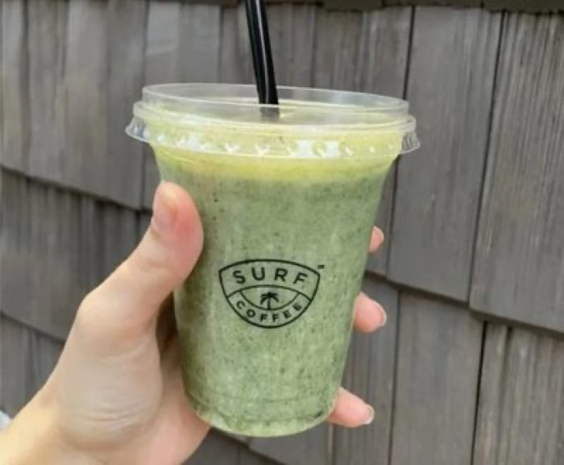
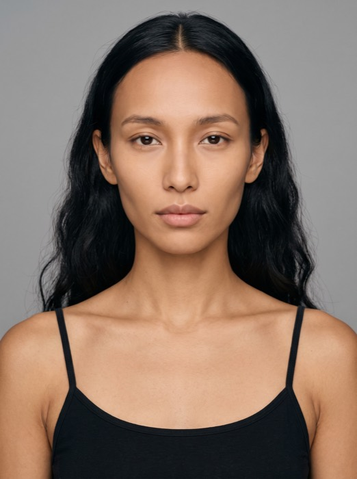
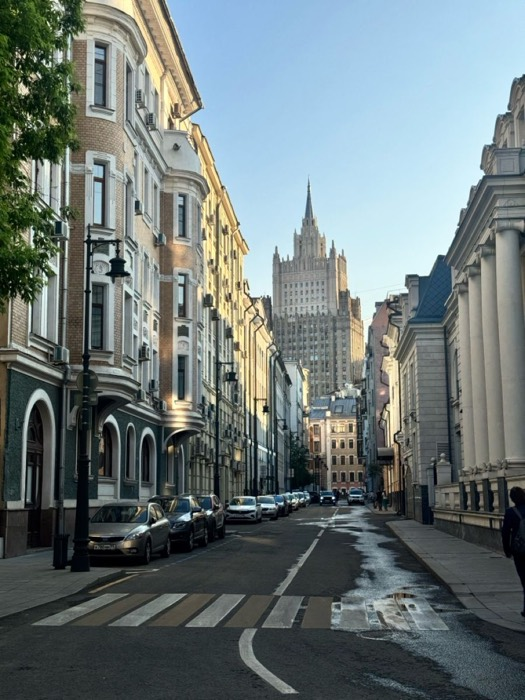
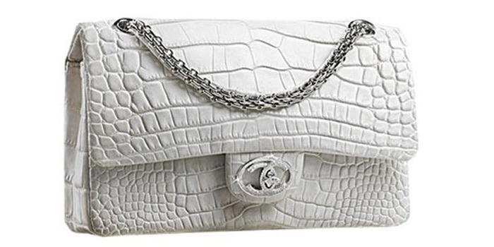

Подбрасываю —
прохожий ловит
Герой едет в кузове пикапа по городу, небрежно подбрасывает товар вверх — камера уходит за ним в slow-mo — и предмет ловит случайный прохожий на улице. Красивый рекламный кадр под что угодно. Внутри две версии промпта: под напиток и под любой другой предмет.
- Открой агрегатор с Seedance 2.5. Вкладка «Видео», модель Seedance 2.5. Если стоит фиксированный seed — убери его, иначе все дубли будут одинаковыми.
- Загрузи три фото по порядку: 1 — персонаж, 2 — локация, 3 — продукт. Промпт ссылается именно на эту последовательность.
- Вставь нужный промпт. Часть 1 — если товар это напиток, часть 2 — если любой другой предмет. Менять в них ничего не нужно.
- Выстави параметры из таблицы ниже и генерируй.
Напиток
Герой держит стакан, делает глоток и подбрасывает его. Промпт заточен под жидкость: капли на стенках, брызги, движение содержимого внутри при вращении. Для кофе, лимонада, смузи — всего, что налито.



Generate a 12-second, 9:16 cinematic multimodal video with realistic feature-film acting and a premium beverage-commercial hero moment. @Image 1 = primary character identity. Preserve the exact person from @Image 1 throughout the entire video: facial proportions, eyes, hair, skin, facial structure, natural texture, and overall identity. Keep the face expressive, alive, subtle, and realistic. @Image 2 = exact and exclusive location reference. The entire video takes place in this location. Preserve its architecture, street, road, sidewalks, perspective, daylight, atmosphere, and spatial character. During all driving shots, continue and naturally reconstruct this same location as the pickup moves forward. The background behind the hero always comes from @Image 2. @Image 3 = exact drink reference. @Image 3 always shows a cup or drink product, such as coffee, tea, iced latte, soft drink, or another beverage. Preserve its exact cup shape, proportions, material, colors, lid, straw if present, texture, branding/details, and recognizable appearance. This is the hero advertising product. The hero wears the same casual textured cotton baseball cap throughout the film. In Shot 1, the hero puts it on and adjusts it. From that moment until the final frame, the same cap remains continuously on the hero. The vehicle is a classic American single-cab long-bed pickup from the late 1990s / early 2000s, with clean realistic proportions and understated cinematic styling. CINEMATOGRAPHY: Premium feature-film cinematography associated with ARRI Alexa Plus and ARRI Alexa Studio, combined with an authentic 35mm motion-picture-film aesthetic. Kodak Vision3 250D 5207 daylight character with subtle tonal depth inspired by Kodak Vision3 500T 5219. Very light organic film grain, soft highlight roll-off, subtle halation, natural skin tones, rich shadow detail, restrained cinematic color, realistic motion blur, natural reflections, and physically photographed texture. ACTING: All movement is smooth, restrained, naturally timed, and emotionally believable. No rushed gestures. The hero notices and processes things before reacting. Use subtle pauses, eye movement, breathing, blinking, and micro-expressions. LOCKED PICKUP-BED SETUP: For Shots 2, 3, and 5, use one identical fixed pose and one identical fixed camera. The hero sits low and centered at the rear end of the pickup bed. His back and shoulders rest naturally against the inside of the closed rear tailgate. The road is behind his back. He faces forward in the pickup's direction of travel. His torso is slightly reclined, shoulders open, both arms spread naturally along the left and right upper edges of the pickup bed, and his legs rest comfortably in front of him. This pose never changes in Shots 2, 3, and 5. Hips, legs, torso position, seated location, and body orientation remain fixed. Only specifically described head, eye, hand, and arm movements change. The camera is rigidly mounted inside the pickup bed near the cab, looking directly back at the hero. Keep exactly the same position, height, focal length, distance, hero scale, and framing in Shots 2, 3, and 5. The camera does not move until Shot 4. After Shot 4, it returns to exactly this same original composition. SHOT 1 — 0.0–3.0s Static locked camera. Use @Image 2 as the exact location. The pickup is parked motionless at the curb in the mid-ground, parallel to the curb, shown in a clear full side profile. The entire cab and long bed are visible. The hero rises into the close foreground from below frame while putting on the baseball cap. He remains slightly leaned toward camera, adjusts the cap smoothly as if checking himself in a mirror, briefly looks at himself, lightly brushes his chin or jaw, then slowly straightens. He turns toward the parked pickup, clearly notices it, pauses naturally, then returns his gaze toward camera with a small confident smile. SHOT 2 — 3.0–5.3s Hard cut. The hero is now riding inside the open pickup bed in the exact locked pose described above, wearing the same cap. The pickup starts moving forward through @Image 2. The camera, hero, and pickup travel together. The road and environment behind the hero recede naturally into the distance. Nearby street elements pass backward relative to the moving pickup while distant architecture moves more slowly. The movement must clearly feel like normal forward driving. The hero lightly adjusts the brim, looks toward one side, casually waves once to someone off-screen, relaxes the arm, then looks toward the opposite side. SHOT 3 — 5.3–7.5s Hard cut to exactly the same camera and exactly the same seated pose. The hero holds the exact drink from @Image 3. He raises the drink and takes one natural sip. He lowers the cup away from his mouth and looks directly at it. Hold a short readable pause. He gives the cup one small natural shake, watches the remaining contents move, and subtly realizes that very little remains. Hold another brief human reaction. Only then does he casually toss the cup upward and slightly outward, sending it away from the moving pickup in a clear readable arc. The cup rises clearly upward and slightly to the side, remaining fully visible and spatially readable. SHOT 4 — 7.5–10.0s First show the cup already separated from the hero's hand and visibly flying upward. Then time shifts into pronounced cinematic slow motion. This is the first major camera movement. The camera makes a strong fast push-in and dramatic zoom toward the exact cup from @Image 3, moving from the wider truck shot into an extreme macro hero-product shot. Perform one smooth controlled orbit around the cup from one side toward the other. Keep the exact cup highly recognizable. The cup rotates naturally. Remaining beverage responds realistically to inertia. If appropriate to the referenced cup, the lid loosens slightly, droplets and small splashes escape, the straw reacts naturally, and sunlight catches the cup, liquid, lid, straw, and airborne droplets. This is the main premium beverage-commercial hero moment: tactile, elegant, realistic, slow, and cinematic. SHOT 5 — 10.0–12.0s After the macro orbit, the camera rapidly pulls back and returns to the EXACT SAME original locked pickup-bed framing used in Shots 2 and 3. The hero remains in exactly the same seated pose. The pickup continues moving forward naturally, increasing the distance between the truck and the airborne cup. For a brief slow-motion beat, keep the cup visible in the air behind and slightly to the side of the departing pickup. Then smoothly return to normal speed. The SAME cup from @Image 3 begins a natural downward trajectory. A random passerby is already naturally present within the same @Image 2 location. The passerby notices the cup descending toward them and instinctively raises both hands. Clearly show the cup falling naturally from above directly into the passerby's hands. The catch must happen as one continuous believable action: descending cup → passerby raises hands → cup lands securely in the hands. The passerby catches the cup cleanly and naturally. Do not make the passerby appear suddenly. The person must already belong naturally to the street environment before the catch happens. At the moment of the catch, the hero turns his head and eyes back over his shoulder and notices what happened. Create a brief readable visual connection: the hero looks toward the passerby, and the surprised passerby looks back toward the departing hero. Then the passerby looks down at the unexpected cup in their hands with genuine surprise and says: "Oh wow." Delivery: genuinely surprised, spontaneous, slightly amazed, natural, as if they cannot believe the cup just landed perfectly in their hands. Use clean natural lip sync. The passerby is the only speaker in this final moment. AUDIO: Natural summer-city ambience: pickup engine, tires on asphalt, subtle suspension vibration, distant cars, occasional voices, layered urban atmosphere. Slightly stretch the ambience during slow motion, then return naturally to real time for the catch and dialogue. CONTINUITY: @Image 1 controls identity. @Image 2 controls the complete environment. @Image 3 controls the exact drink. The same cap stays on after Shot 1. The hero always remains physically inside the pickup bed during the driving shots. The pickup-bed pose remains identical in Shots 2, 3, and 5. The pickup-bed camera remains identical in Shots 2, 3, and 5, except for the deliberate zoom and orbit in Shot 4. After Shot 4, the camera returns to exactly the same original pickup-bed framing. The pickup always moves forward with physically correct background motion. 4K, Ultra HD, rich details, sharp clarity, cinematic texture, natural colors, realistic skin, subtle fine 35mm grain, premium macro product cinematography, stable composition, and polished feature-film realism.
Любой предмет
Та же механика, но под твёрдый товар: сумка, кроссовок, коробка, флакон, книга. Промпт длиннее — в нём подробнее прописано, как предмет вращается в воздухе и как ложится в руку. Работает для маркетплейса и локального бренда одинаково.



Generate a 12-second, 9:16 cinematic multimodal video with realistic feature-film acting and a premium hero-product moment. @Image1 = primary character identity. Preserve the exact person from @Image1 throughout the entire video: face, facial proportions, eyes, hair, skin, natural texture, and overall identity. Keep the same person fully stable in every shot. The face remains alive and realistic with natural blinking, breathing, eye focus, subtle micro-expressions, and believable reactions. @Image2 = exact and exclusive location reference. Use this location throughout the entire video. Preserve its architecture, street, road, sidewalks, perspective, daylight, atmosphere, and spatial character. During all driving shots, naturally continue and reconstruct the same @Image2 environment as the pickup moves forward. Do not introduce a different street or environment. @Image3 = exact hero-product reference. Preserve the exact object from @Image3: proportions, silhouette, materials, textures, colors, surface details, packaging, and recognizable appearance. This object is the key advertising focus of the film and must remain visually consistent when held, thrown, shown in macro, falling, and caught. The hero wears the same casual classic baseball cap throughout the film. The cap is made from slightly textured cotton fabric with visible realistic seams, a soft structured crown, curved brim, natural fit, and understated everyday styling. In Shot 1, the hero puts on this cap and adjusts it. From that moment until the final frame, the same cap remains continuously on the hero. The vehicle is a classic American single-cab long-bed pickup from the late 1990s / early 2000s with realistic proportions, understated styling, and a clean cinematic road-used appearance. CINEMATOGRAPHY: Premium feature-film cinematography associated with ARRI Alexa Plus and ARRI Alexa Studio, combined with an authentic 35mm motion-picture-film aesthetic. Kodak Vision3 250D 5207 daylight character with subtle tonal depth inspired by Kodak Vision3 500T 5219. Very light organic grain, soft highlight roll-off, subtle halation, natural skin, rich shadows, restrained cinematic color, realistic motion blur, natural reflections, and physically photographed texture. ACTING: Natural, smooth, understated acting with small readable pauses and emotionally believable reactions. No rushed gestures. No exaggerated performance. The hero notices, processes, then reacts. Use subtle eye movement, breathing, blinking, micro-expressions, and short human pauses. LOCKED PICKUP-BED SETUP: Shots 2, 3, and 5 use one identical seated pose and one identical fixed camera. The hero sits low and centered at the rear end of the open pickup bed. The back and shoulders rest naturally against the inside surface of the closed rear tailgate. The road is directly behind the hero's back, beyond the tailgate. The hero faces forward in the direction of travel, toward the cab. The torso is slightly reclined and relaxed. The shoulders are open. Both arms rest broadly along the left and right upper side edges of the pickup bed. The legs rest comfortably in front of the body. The pose feels casual, confident, open, and physically supported by the rear tailgate. This exact base pose never changes in Shots 2, 3, and 5. The hips, legs, torso position, shoulders, seated location, and body orientation remain fixed. Only specifically described head, eye, hand, and arm actions change. The hero always remains physically inside the pickup bed. The hero never appears on the exterior of the pickup, on the roadway, outside the truck bed, or in another seating position. The camera is rigidly mounted inside the pickup bed near the cab and faces directly backward toward the hero and the rear tailgate. Keep exactly the same camera position, height, focal length, distance, hero scale, framing, and composition in Shots 2, 3, and 5. The camera remains fixed and does not recompose during the driving shots. Only subtle natural vibration from the road and suspension is visible. The first and only major camera movement begins in Shot 4 when the camera follows the airborne product. After the macro sequence, the camera returns to exactly the same original pickup-bed framing. SHOT 1 — 0.0-3.0s Static locked camera. Use @Image2 as the exact location. The pickup is parked motionless at the curb in the mid-ground, parallel to the curb, shown in a clear full side profile. The entire cab and long bed are visible. The hero rises into the close foreground from below frame while putting on the baseball cap. The hero remains slightly leaned toward the camera as if checking the appearance in a mirror and adjusts the cap with one smooth confident motion. The hero briefly looks into the camera. The hero lightly brushes fingers along the chin or jaw. The hero slowly straightens into a relaxed standing position. The hero turns toward the parked pickup, clearly notices it, and holds a short readable pause. Then the hero turns back toward the camera with a subtle confident smile. SHOT 2 — 3.0-5.3s Hard cut. The hero is now riding inside the open moving pickup bed in the exact locked pose described above, still wearing the same cap. The pickup starts moving forward smoothly through the exact @Image2 location. The camera, hero, and pickup travel forward together. Movement must follow real-world physics. The street and environment behind the hero recede naturally into depth. Nearby sidewalks, parked vehicles, poles, facades, and street elements pass backward relative to the moving pickup, while distant architecture changes position more slowly. The motion must clearly read as normal forward travel. Keep the hero's base pose completely fixed. The hero lightly adjusts the brim of the cap. The hero smoothly looks toward one side of the street. The hero notices someone off-screen and gives one small casual wave. The hand returns to its relaxed resting position. The hero slowly looks toward the opposite side. SHOT 3 — 5.3-7.5s Hard cut to the exact same locked pickup-bed camera and the exact same seated pose. The hero now holds the exact object from @Image3 naturally in one hand. The object is clearly visible. The hero slowly shifts the eyes toward the object and slightly turns the head toward it. Hold a short natural acting beat. The hero looks at the object with genuine attention, as if briefly considering what is in the hand. Use a subtle believable facial reaction: a small change in the eyes, eyebrows, or mouth, followed by a short human pause. Do not add complicated opening, unpacking, searching, testing, or exaggerated interaction. The hero remains relaxed in the same fixed seated pose. After the pause, the hero casually flicks and tosses the object upward and slightly outward to the side with one smooth, effortless movement of the hand and forearm. The throw feels spontaneous and relaxed, not forceful. The object cleanly leaves the hand and rises upward in a clear readable arc, drifting slightly away from the moving pickup. The hero's hips, legs, torso, shoulders, and seated position remain fixed during the throw. Only after the object is fully separated from the hand and clearly airborne does the camera begin to move toward it. SHOT 4 — 7.5-10.0s First clearly show the exact @Image3 object freely rising through the air. Then transition into pronounced cinematic slow motion. This is the first major camera movement in the driving sequence. The camera rapidly accelerates toward the airborne object with a strong cinematic push-in and dramatic zoom. The movement must feel like the camera catches up with the same object in continuous physical space, never like a separate insert shot. Move into an extreme macro hero-product view. Perform one smooth controlled orbit around the airborne object while it continues its natural flight and rotation. Keep the exact object from @Image3 highly recognizable throughout the macro sequence. Show realistic inertia, gravity, rotation, material response, reflections, texture, and any physically appropriate moving details. If the object contains liquid, flexible packaging, loose contents, moving parts, fabric, or other responsive material, show only the natural physical behavior appropriate to that exact object. Sunlight catches the object's surfaces, edges, textures, and fine details. Use shallow cinematic depth of field and strong highlight separation. This is the premium hero-product moment: elegant, tactile, realistic, polished, and cinematic. SHOT 5 — 10.0-12.0s After the macro orbit, the camera rapidly pulls back and returns to the EXACT SAME original locked pickup-bed framing used in Shots 2 and 3. The hero remains in exactly the same seated pose. The pickup continues moving forward naturally, increasing the distance between the truck and the airborne object. For a brief slow-motion beat, keep the same @Image3 object visible behind and slightly to the side of the departing pickup. Then smoothly return to normal speed. The SAME object from @Image3 now begins a natural downward trajectory. A random passerby is already naturally present on the sidewalk or pedestrian area within the same @Image2 location. The passerby is not standing in the roadway. The passerby notices the object descending from above and instinctively raises both hands. Clearly show the same object falling naturally into the passerby's hands. The catch must happen as one continuous physically believable motion: object descends -> passerby notices it -> hands rise -> object lands securely in the hands. The passerby catches the object cleanly and naturally while remaining on the sidewalk or pedestrian area. Do not make the passerby suddenly appear. The person must already belong naturally to the environment before the catch happens. At the exact moment of the catch, the hero turns the head and eyes back over the shoulder and clearly notices the passerby holding the object. Create a short readable visual connection between them. The hero looks toward the passerby. The passerby looks back toward the departing hero while holding the unexpected object. Then the passerby looks down at the object in genuine surprise and says: "Oh wow." Delivery: spontaneous, genuinely surprised, slightly amazed, natural, as if they cannot believe the object just landed perfectly in their hands. Use clean natural lip sync. The passerby is the only speaker in the final moment. AUDIO: Natural summer-city ambience: pickup engine, tires on asphalt, subtle suspension vibration, distant cars, occasional pedestrian voices, and layered urban atmosphere. During the macro slow-motion moment, gently stretch and soften the ambience. Return naturally to real-time sound for the catch and the final dialogue. CONTINUITY: @Image1 always controls character identity. @Image2 always controls the complete location and environment. @Image3 always controls the exact hero object / product. The same cap remains continuously on the hero after Shot 1. The hero always remains inside the pickup bed during driving shots. The pickup-bed pose remains identical in Shots 2, 3, and 5. The pickup-bed camera remains identical in Shots 2, 3, and 5, except for the deliberate push-in, zoom, and orbit in Shot 4. After the macro sequence, the camera returns to exactly the same original framing. The pickup always moves forward with physically correct background motion. Maintain realistic object-specific physics during the hold, toss, flight, macro rotation, descent, and catch. 4K, Ultra HD, rich details, sharp clarity, cinematic texture, natural colors, realistic skin, subtle fine 35mm grain, premium macro product cinematography, stable composition, and polished feature-film realism.
- Товар узнаваем. Логотип, форма и цвет должны совпадать с фото — модель охотно «улучшает» дизайн упаковки.
- Бросок и ловля сошлись. Предмет должен лететь по одной траектории: вылетел из руки — прилетел в руку. Разрыв движения — самый частый брак.
- Лицо не поплыло между планами в кузове и на улице.
- Локация та же. Фон в кадре с прохожим должен быть той же улицей, что и в проездах, а не новым городом.
- Руки в момент ловли. Пальцы — вечное слабое место. Смотри покадрово.
 ▶
▶
Хочешь снимать такое на заказ?
Готовый тренд закрывает один ролик. Дальше нужен навык собирать такие сцены под любой товар и любую задачу клиента. На обучении даю систему целиком: от первой генерации до портфолио и первых заказов. Приходи на экскурсию — покажу платформу изнутри и работы учеников, разберу твою ситуацию. Ничего продавать не буду.
Записаться на экскурсию → Бесплатно · созвон 30–40 минут · места ограничены